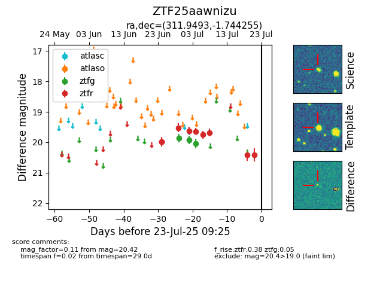

Target ZTF25aawnizu at 2025-07-23 11:48, see:
FINK: fink-portal.org/ZTF25aawnizu
Lasair: lasair-ztf.lsst.ac.uk/objects/ZTF25aawnizu
ALeRCE: alerce.online/object/ZTF25aawnizu
alt names
ZTF25aawnizu (ztf,fink)
coordinates:
equatorial (ra, dec) = (311.9493,-1.74425)
galactic (l, b) = (45.4855,-26.51121)
photometry
last ztfg=20.04, ztfr=20.42
3 ztfg, 9 ztfr detections
